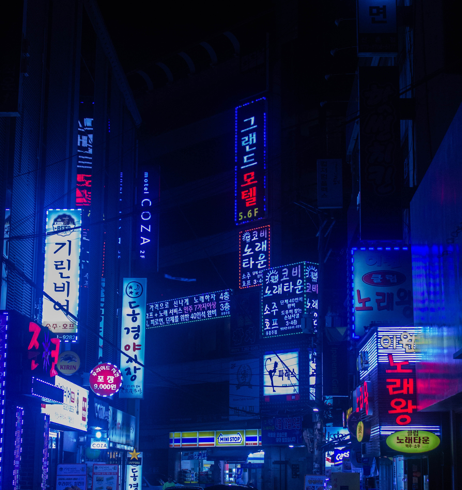
높이 솟은 현대적인 빌딩 사이에 80년대의 감성을 간직한 곳이 있다?
점점 빨라지는 세상 속에서 자신만의 시대를 간직한 것들이 오히려 더욱 빛나기 시작하는 요즘. 시간이 지날수록 그 가치가 점점 더 커지는, 날이 갈수록 많은 사람들의 발길이 끊이지 않는, 서울의 뉴트로 성지들을 모아보았다. 과거와 현재가 공존하는 서울의 매력으로 빠져보자.
서울의 대표적인 랜드마크인 남산타워는 로맨틱하게 서울을 즐길 최적의 장소이다.
어느 기분 좋은 밤,
찬란하게 빛나는 서울을 바라보며 몽글몽글한 설렘을 느끼고 싶다면 내 옆에 있는 소중한 누군가와 남산 데이트를 잡아보자.


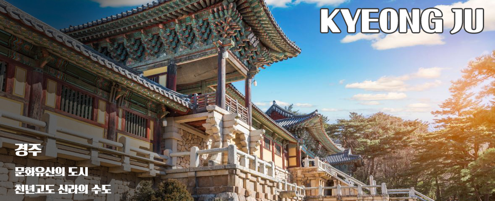
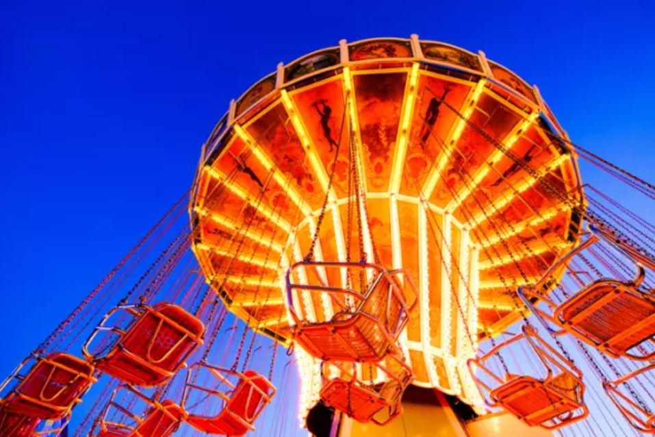
경주 여행지 추천
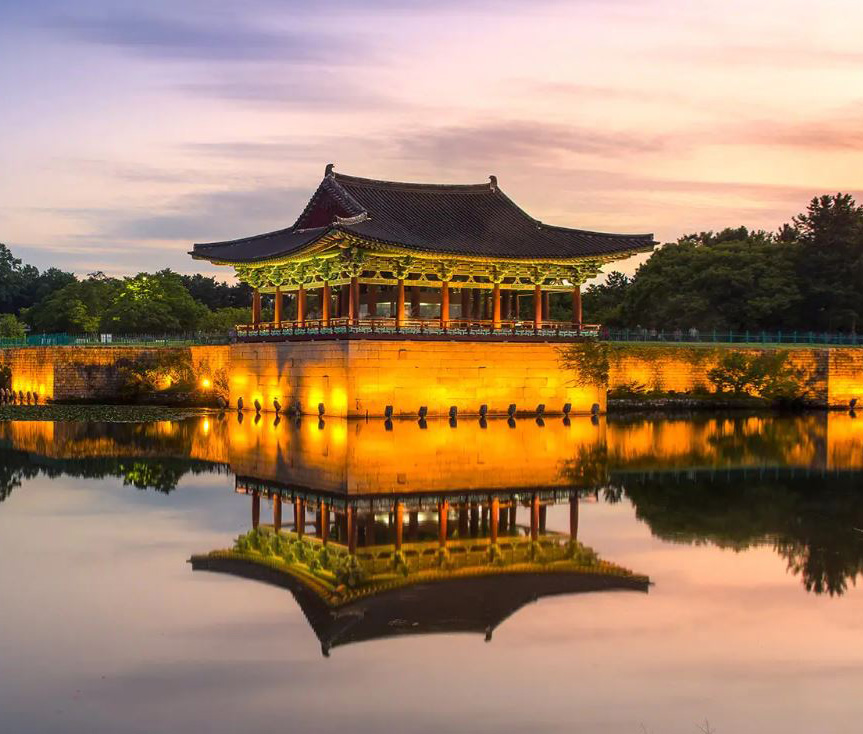
각종 축제 일정

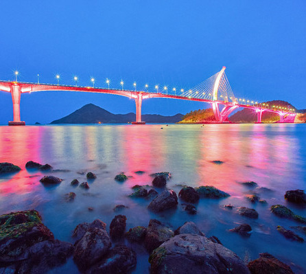
여수 여행지 추천
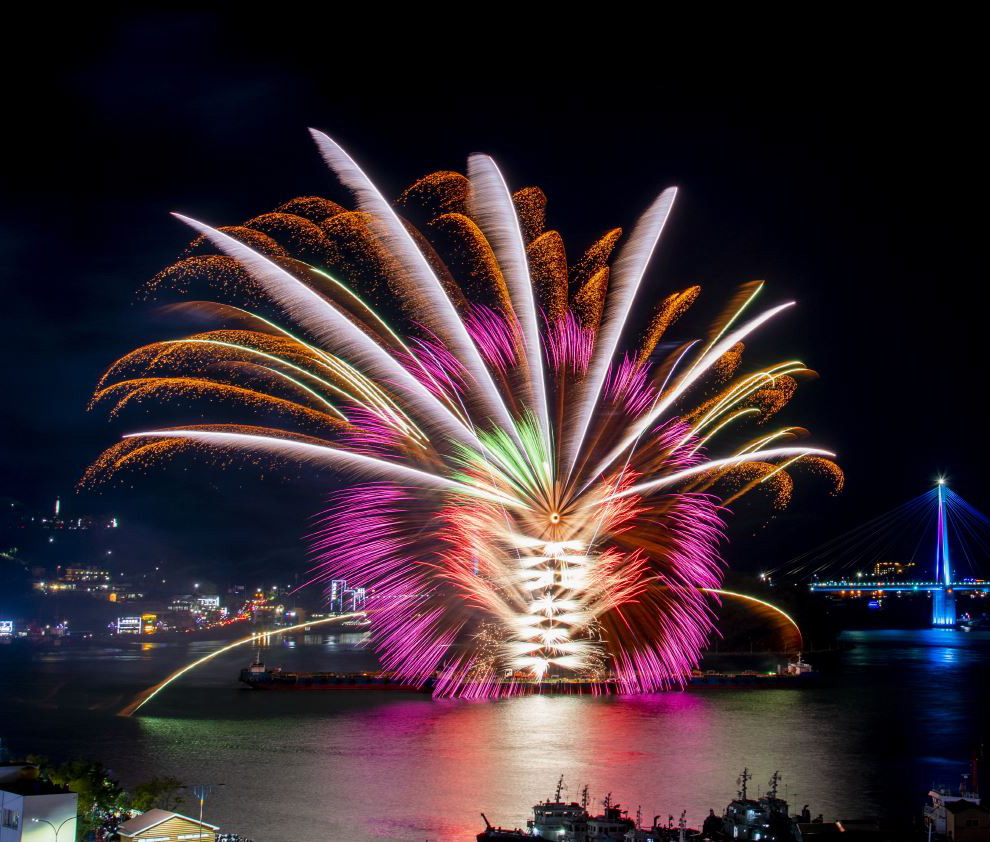
여수 축제 일정
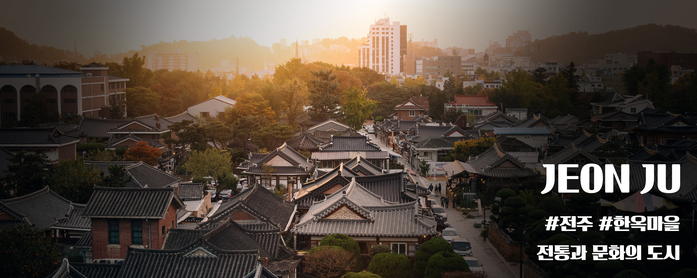

전주 여행지 추천
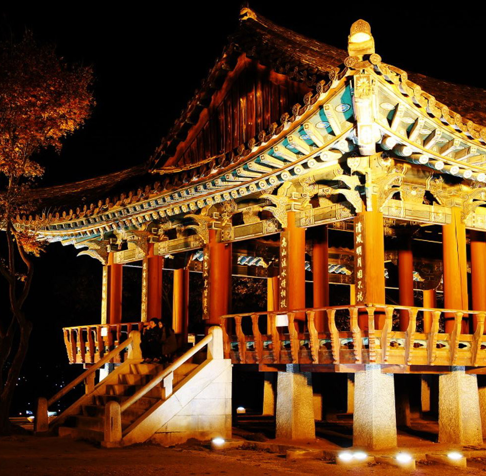
전주 축제 일정

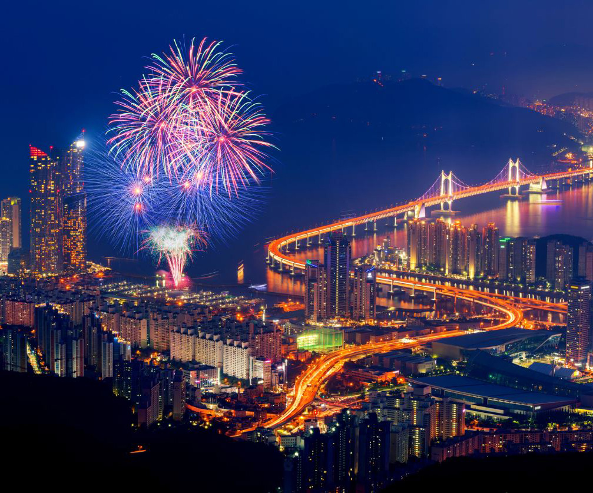
부산 여행지 추천
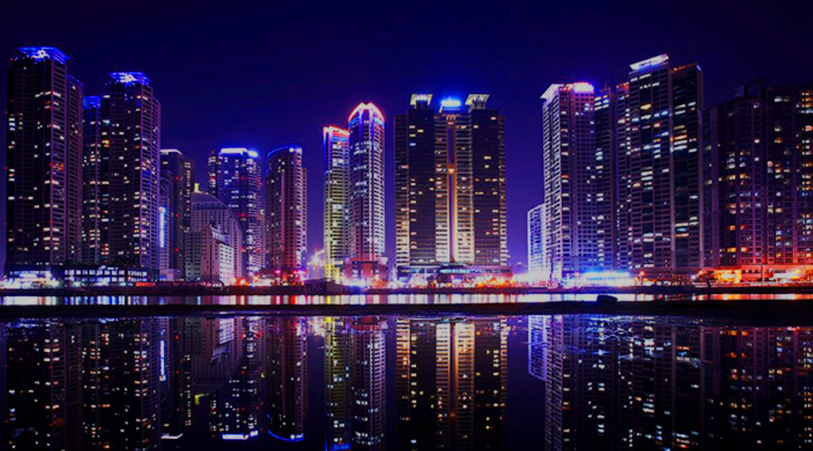
부산 축제 일정

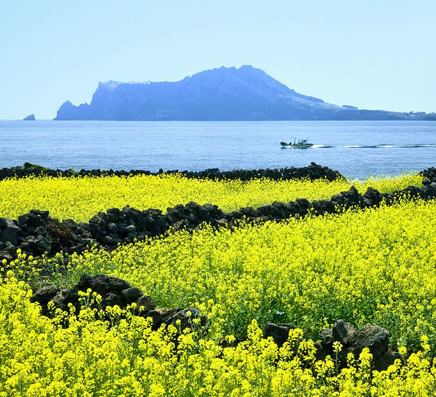
제주 여행지 추천
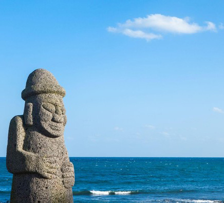
제주 축제 일정
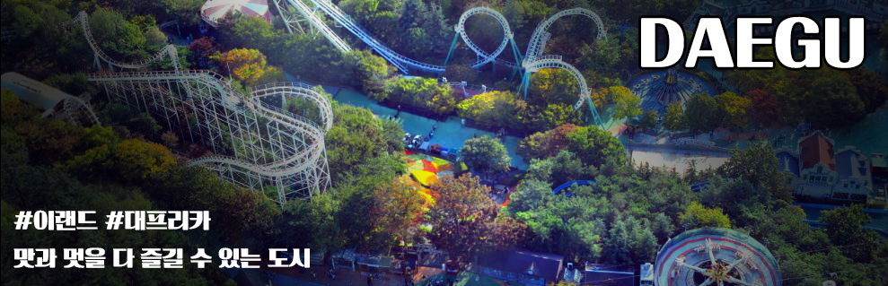
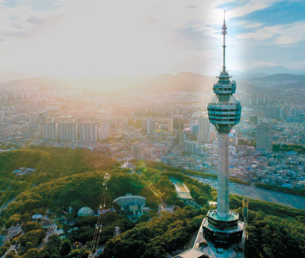
대구 여행지 추천
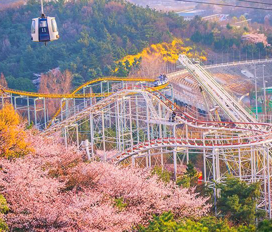
대구 축제 일정